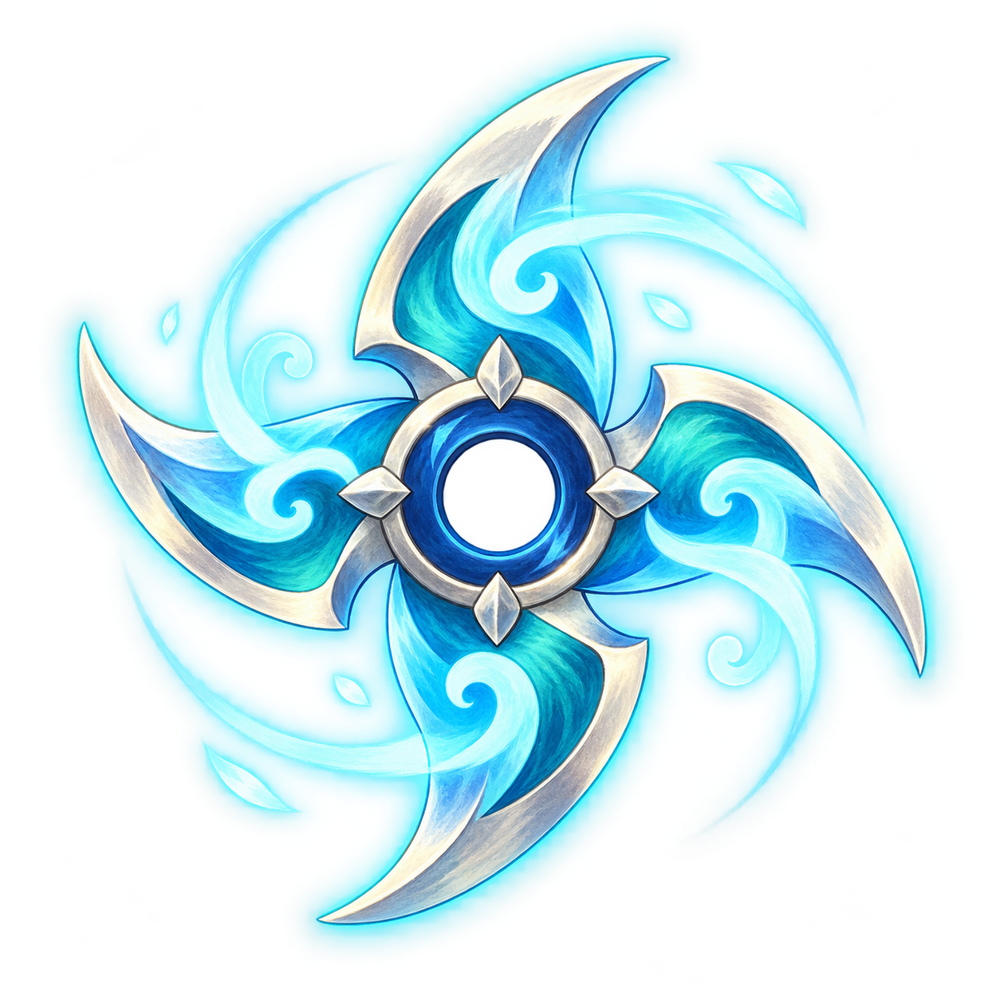

Tempest · Wind stars
Ten hearts. Two returning wind stars. Tempest recharges once, from five hearts to seven, then sends paired gusts. The final arena is a fight against Tempest alone. Jump over gusts or hold Down to duck beneath them.
X / F throws a star. Z stows or equips the stars, letting you punch monsters. Each star comes back to Benny five seconds after its throw. Hits, misses and shield deflections all return automatically. The same pair can deliver the five successful hits needed to defeat Tempest.
Loading artwork…